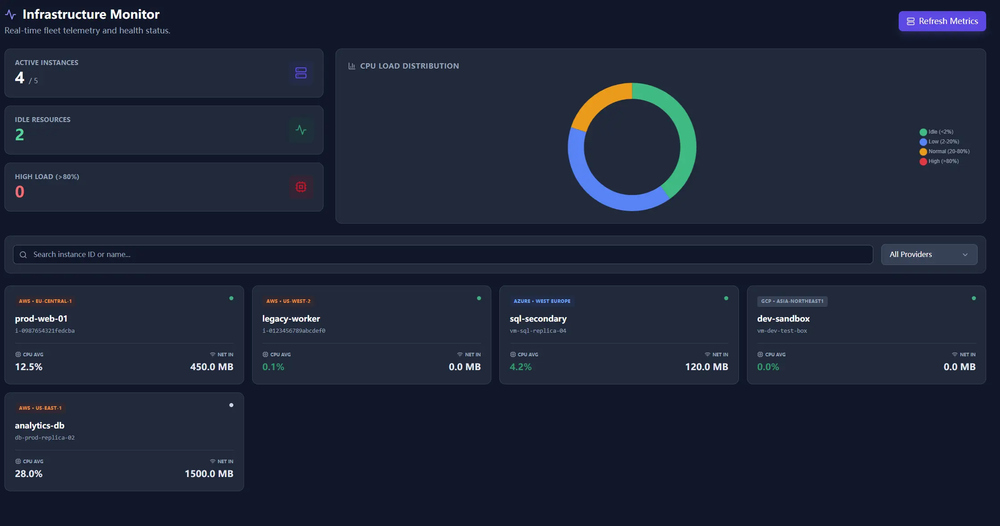

This release was driven by support logs, not roadmap slogans. Teams were spending too much time interpreting raw findings and too little time closing them.
Finding waste is still the easy part. The hard part is deciding what counts as waste for your environment, reviewing it fast, and acting without unsafe shortcuts. v1.16.3 focuses on that operating gap.
1. Policy Engine: one threshold never fit every environment
Earlier releases depended on global sliders. That is convenient for a demo and weak for a real estate. Production databases, dev sandboxes, background workers, and batch jobs do not behave the same way, so the definition of waste should not be global either.
The policy engine lets teams define granular rules by resource type and condition set, so reviews can move away from generic CPU thresholds and toward environment-specific logic.
- Complex logic: combine multiple conditions with AND and OR rules.
- Resource targeting: define separate logic for instances, databases, volumes, and networking artifacts.
- Visual editing: operators can adjust policy without dropping into raw JSON.

2. Monitor 2.0: faster first-pass review
A monitor page that only dumps numbers is not useful in a live review. The redesign shifts the page toward fast visual triage. Teams can see load distribution, spot imbalances, and inspect resource health without assembling the story from raw tables.
Load distribution
Idle, underused, and overloaded states are easier to compare at a glance, which shortens the first review pass.
Health cards
Card-based resource views make CPU, traffic, and status patterns easier to read than a flat metric dump.

3. Smart scans for multi-account teams
Scanning multiple accounts used to feel opaque. The updated flow makes selection explicit and keeps progress visible after the scan starts, so the operator can still see what the tool is doing instead of staring at an empty modal.
That sounds small, but it directly affects trust. A long-running scan is tolerated when the tool shows clear progress and scope. It becomes frustrating when the operator has no idea whether the task is still healthy.
4. Local intelligence for reliability
This release line also moved GeoIP resolution away from external lookups and into an embedded MaxMind database path. That cuts latency, avoids third-party leakage of visitor IPs, and removes one more hosted dependency from the page analytics flow.
For operators, the benefit is simple: fewer external failure points in a console path that should stay boring and reliable.
Why this release mattered
v1.16.3 is where the product started behaving less like a bag of cleanup scripts and more like a governed operating surface. The difference is not marketing language. It is the time saved between finding a problem and making a decision the team can defend.
For policy heuristics that explain these decisions in detail, pair this with The Idle Fallacy and Customer-First Shipping Feedback Loop.